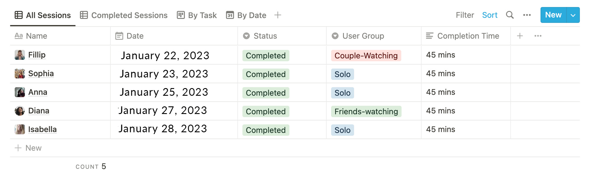
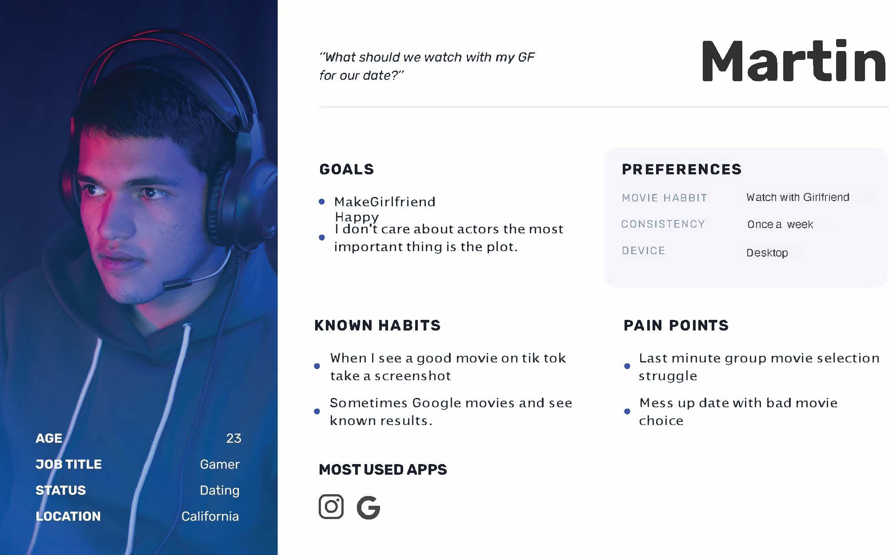
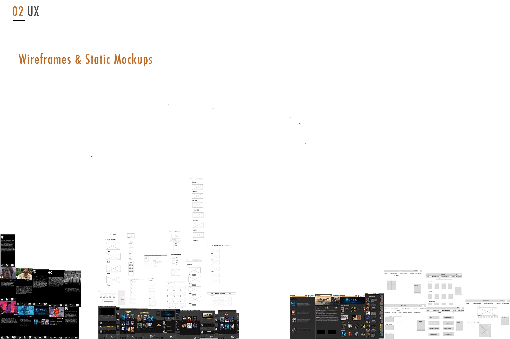
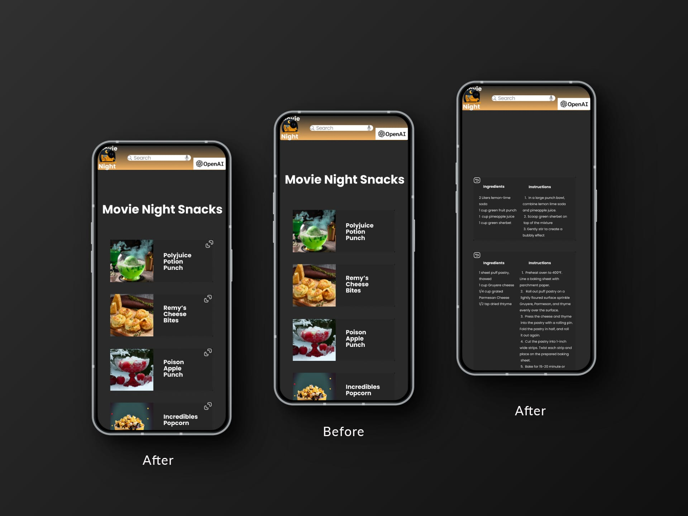

1.Overview
• Problem Statement
I wanted to make the Of movie nights as simple and quick as possible.
VVe know that planning get-togethers can be a headache. Moreover, this problem is
particularly challenging since everyone has different tastes in snacks, games and
movies, which may also vary based on their mood.
We at Movie Night are dedicated to reinventing the process of
preparing a movie-themed party. We recognize the difficulties in
planning an event, from themed games and snacks to cocktails and
trailers, and we work to make the procedure more efficient. We
provide an all-in-one platform with everything you require for your
event since we want to make party planning as simple as possible.
Simply choose the theme direction, and we'll take care of the rest,
making party planning easy and fun.
• Solution
We ran 7 weeks of design sprints based on the design thinking methodology, which
includes 5 stages: empathize, define, ideate, prototype, and test. We eventually
created a fully functional app with a movie quiz. Wth little A1 help, you can get
movie recommendations based on your moodlpreferences in as little as 3
minutes.
Users choose a movie theme on our platform, and we put together
a customized party package. Our final product is a thorough event
schedule that includes activities, refreshments, drinks, and movie
trailers. We make complicated party planning easy and enjoyable
with Movie Night.
• Main Features
A1 Chatbot
Find movie trailers
Find movie-themed
snacks/drinks
Find movie-themed
games/discussions
• My Role
We conducted initial user research and created low-fi wireframes, followed by hi-fi. Also helped evaluate our designs through usability tests before it was launched,
2. design
We used a design-thinking methodology of 5 phases to solve this problem
• User Interviews
• User Surveys
• Affinity Map
• User Personas
• Brainstorming
• User Flows
3. Empathize
We interviewed a variety of Roosevelt Island locals in-depth to fully understand their
experiences and needs. These 45-minute meetings gave us insightful feedback that
helped us enhance our platform.
STYLE: MODERATED
NUMBER: 5 PEOPLE
DURATION: 45 MINUTES
INTERVIEW TYPE: INTERVIEW
Main questions I asked
• What problems do you face when
finding a movie?
• Why do you watch movies? (kill time,
learn, etc)
• How do you find movies?
Preparation
In order to Stay organized and take track
of all sessions, I used Notion
Preparation
In order to stay organized and take track
of all sessions, I used Notion

Our finding threw a giant spanner in the works. We realized that our
assumption — that some users watch movies based on the actors
— was dead wrong. The most important thing is the plot.
4. Define
TO organize research findings, I used an affinity mapping technique. I put down each
insight on one sticky note, found patterns, and grouped them together, As a result, I got
3 main user groups

For each user group that I've discovered, I developed a persona. See the example of
one representative of the group

5. Ideate
To evaluate the market and get more accurate ideas at the ideation stage of the design-thinking process, we conducted a competitor analysis

After careful consideration, we created a platform layout with discrete, simple-to-use tabs
and pages for the Community Forum, Event Calendar, Local News, and Community
Resources. This architecture streamlines community contact and resource accessibility for residents by combining all elements of community participation and information into a
single, user-friendly interface.
Once we had a clear idea of our users and their needs, we were able to ideate on a final
user flows


6. prototype
We created low-fi wireframes, followed by hi-fi with Figma, so we can test out our idea

7. Usability Testing
To see how people interact with wireframes and whether the product idea meets their
expectations, I conducted several iterations Of usability testing.
Main Tasks we asked to complete
1. Plan a movie-themed party centrally.
2. Allow for custom party curation.
3. Simplify the procæss of movies.
✨Main Usability Issues✨
The following changes are a few of the things that we applied based on the testing
feedback
usability issue 1
"Where do I click?"
Users were having difficulty finding the corresponding recipes for each menu item.

Performance rate improvement
We were very interested to see whether the changes have improved an app's usability.
Therefore, using the Useberry tool with 5 participants, we conducted quantitative testing
and after improvements. And the results were arnazing!
Performance improved 40%
by
First Iteration

Last Iteration

8. Final Results
user Problem
Users report difficulty choosing the right
movies to watch with friends and difficulty
narrowing down their choices for movie
nights.
Solution
Provide users with specialized activity
suggestions and matching film trailers to
inform their film selection and improve
thematic coherence to make it easier to
plan movie-themed events.
9. Reflection

• Outcome
We've successfully created a responsive website that solves the major problem of
"finding something to do for movie night". We got a lot of positive feedback about an
idea and website. Moreover, we've improved the usability by 40% However, we can't
tell exactly if the movie-themed snacks results will resonate with users, so it would be
nice to revisit the project in the future and to test that out.
• Takeaway
We've noticed that it's better to avoid different Ul implementations on the
wireframes stage since users were distracted and cnntinued giving feedback more on
the 100k and feel rather than usability issues Of the app.

 1.png)